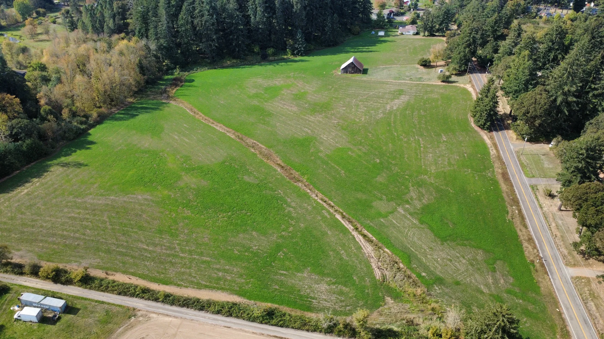
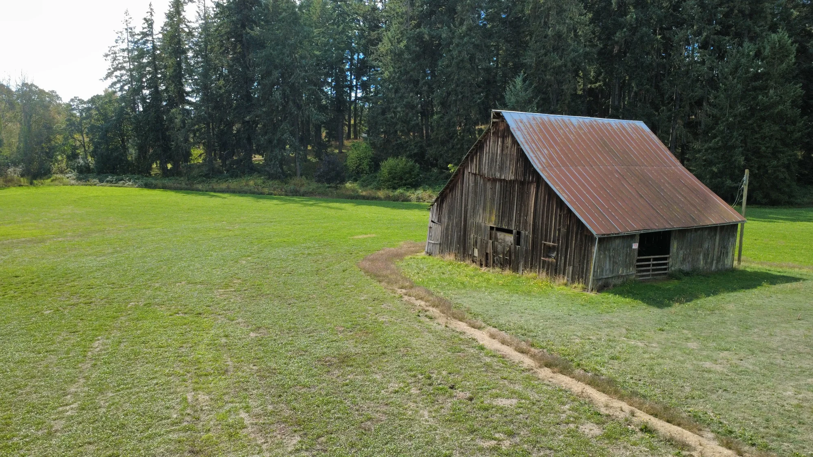
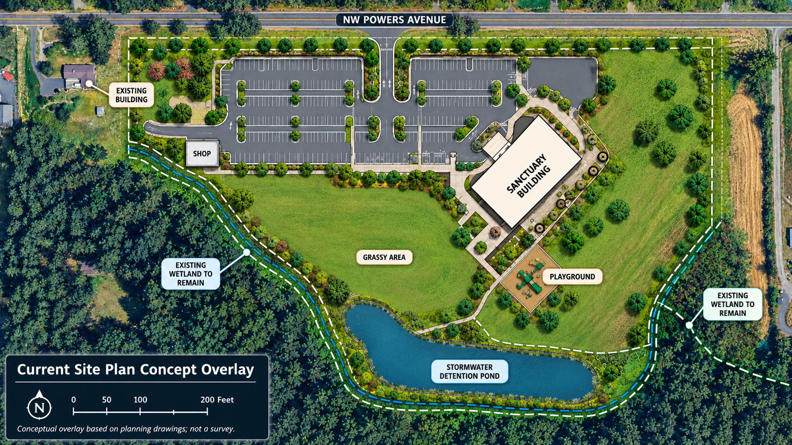
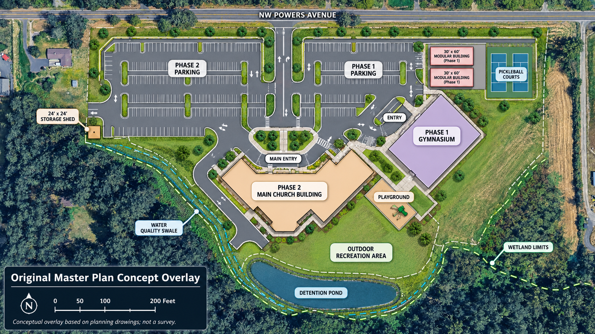

Road safety & traffic
Powers Avenue is a rural road. Residents have raised concerns about increased vehicle trips, roadway widening, shoulder conditions, and constrained right-of-way.
Where things stand
Official decision: After the Board’s 2–1 September 8 approval vote, commissioners voted 2–1 again on October 20 to adopt Order D2026-085 and formal findings. The County issued a Notice of Decision dated October 21. The Planning Commission’s earlier denial was reversed. Read the official meeting packet ↗
What happens next: Saving Powers is preparing a possible LUBA appeal; filing is not yet confirmed. The County’s notice states a 21-day appeal period. If the order became legally final on October 20, November 10 is the conservative filing date to plan around. Counsel should verify finality, signatures, and the controlling deadline.
Time-sensitive legal appeal window
We’re organizing a LUBA challenge to the County’s decision, and neighbors are rallying behind the effort. Your help now supports legal counsel, record review, and the preparations needed to file.
LUBA generally requires a Notice of Intent to Appeal within 21 days after a decision becomes legally final. The County’s October 21 notice does not by itself establish when the order was signed. For planning purposes, treat November 10 as the conservative potential deadline pending confirmation by counsel. Review LUBA’s guidance ↗
Case LU-25-067 · October 20 order and findings ↗
From the neighborhood
Images shared by Saving Powers volunteers show open ground, an older barn, and rural roadside views in the Powers Avenue area. These photos provide geographic context, not a survey of the project boundaries.



Site plans
The current site plan is shown first so visitors can understand the proposal now under discussion. The earlier two-phase master plan is still included below as background context.

The graphic below shows the earlier two-phase campus concept, including Phase 1 and Phase 2 parking, a gymnasium, future main church building, modular buildings, recreation areas, and other site features.

Traffic by the numbers
Earlier county staff materials discussed 990 average daily trips (ADT) east of the site. The October 20 final findings instead relied on a revised forecast of 683 ADT east and 364 ADT west, drawn from updated studies prepared by Sandow Engineering for Northside Church. These figures come from different stages of the record and are estimates, not actual traffic counts.
What did the county do? Benton County retained DKS Associates to review Sandow’s updated studies. The final findings say that the Board relied on DKS’s review and County Public Works’ concurrence when accepting the lower forecast, despite opposing evidence from Greenlight Engineering. So the record supports saying the Board chose the revised church-submitted estimates over an earlier higher projection; saying the county simply “ignored its own engineers” would leave out that independent county review.
The County describes 700 ADT as the expected upper range for a Primary Local Road. The final east-side estimate is just 17 trips below that benchmark. Saving Powers questions whether the revised assumptions adequately capture the proposed use’s impacts. The 700-ADT figure is a planning benchmark, not automatically a legal traffic limit.
Compare the earlier county staff report ↗, the October 20 findings (Exhibit A) ↗, and the opposing engineering analysis ↗.
≈98% of the 700-ADT benchmark — 17 trips/day below.
Why neighbors object
Powers Avenue is a rural road. Residents have raised concerns about increased vehicle trips, roadway widening, shoulder conditions, and constrained right-of-way.
The proposed use includes activity beyond Sunday services. Neighbors are concerned about amplified sound, evening use, and lighting near existing homes.
A large building and nearly four acres of paved parking would materially change the visual and physical character of the site and surrounding neighborhood.